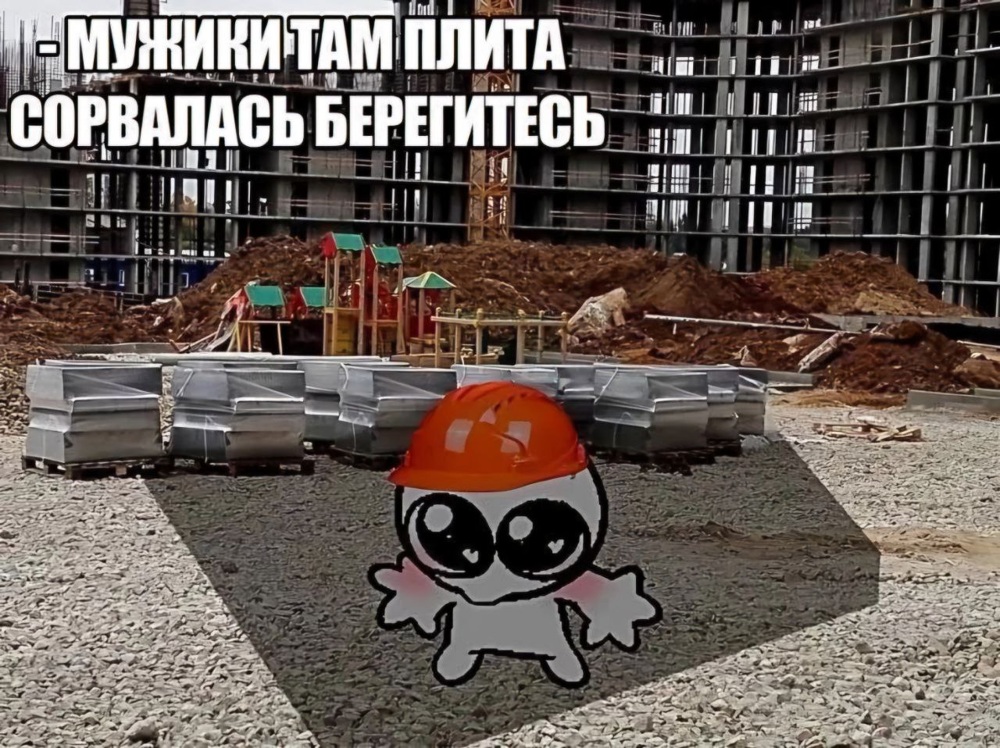

Пучков Артем
Привет, я Артем, поступил в 2023 году на физический факультет, сейчас учусь физико-техническом и надеюсь что не закончу на ФСПН. На этом сайте постараюсь дать общую информацию о себе и рассказать немного о своих интересах.
Who i'm?
Родился и вырос в Ярославле. Со школы планировал стать программистом, но с возрастом осознал, что сфера для меня не очень то и подходит, поэтому сменил курс направления на творческую деятельность в медиа-пространстве.
Планы на жизнь
В идеале хотелось бы обеспечить себе жизнь без финансовых ограничений с работой, которая действительно нравится, но как повернется судьба - никто не знает.